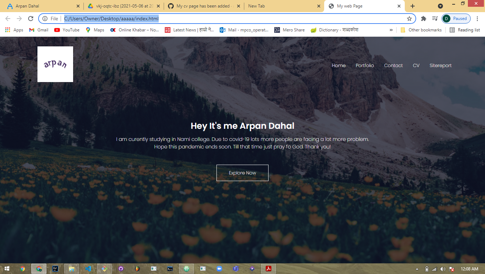
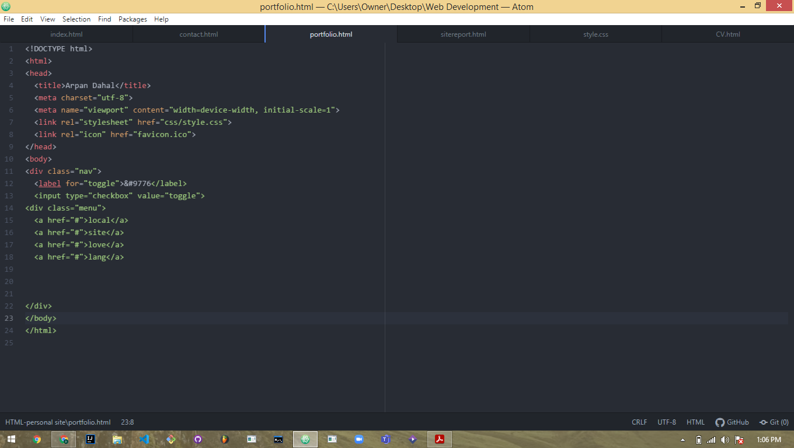
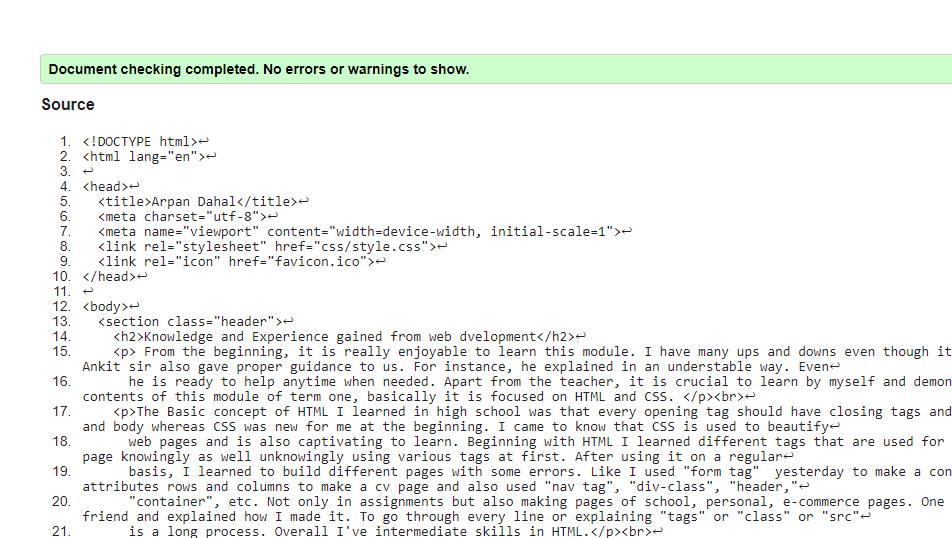
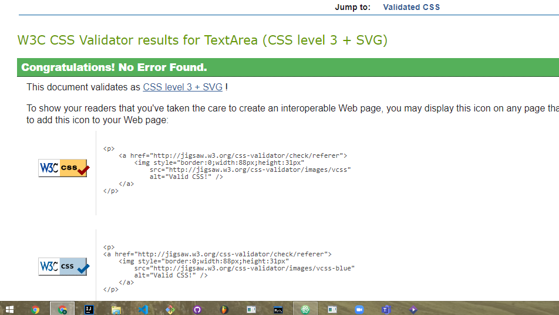

From the beginning, it is really enjoyable to learn this module. I have many ups and downs even though it is fascinating to learn. Our teacher Ankit sir also gave proper guidance to us. For instance, he explained in an understable way. Even he is ready to help anytime when needed. Apart from the teacher, it is crucial to learn by myself and demonstrate skills. Talking about the contents of this module of term one, basically it is focused on HTML and CSS.
The Basic concept of HTML I learned in high school was that every opening tag should have closing tags and mandatory tags are html, head, title and body whereas CSS was new for me at the beginning. I came to know that CSS is used to beautify web pages and is also captivating to learn. Beginning with HTML I learned different tags that are used for different purposes. I coded in the html page knowingly as well unknowingly using various tags at first. After using it on a regular basis, I learned to build different pages with some errors. Like I used "form tag" yesterday to make a contact page and table along with attributes rows and columns to make a cv page and also used "nav tag", "div-class", "header," "container", etc. Not only in assignments but also making pages of school, personal, e-commerce pages. One week ago I made a school page to my friend and explained how I made it. To go through every line or explaining "tags" or "class" or "src" is a long process. Overall I've intermediate skills in HTML.
CSS is very interesting to use which makes web pages awesome. Changing colors, font-size, background and other properties in pages is really enjoyable. I tried so many properties like margin, padding, border font etc. I find moving text top and down, moving pictures up and down and grid properties a bit difficult. Changing color, font-size, font-style, margin-left, padding-left, margin, padding, and other common properties are easy. I came to know that making a beautiful web page is not hard and changing the overall layout too. CSS makes me curious about learning better design. I'm in intermediate level in CSS. I have been practicing to be better. My code may have mistakes or logical flow. So I need to fix it through the debugging process. Previously I did not know about this but I learned it after I joined college. I found that it's easy to find bugs in simple pages I made in html but need more focus for advanced websites. After learning from term one, I can make a good website with better design and find bugs and can fix it.
-First I made VS code but I changed it to atom editor. I changed the background image in the new page as well as font-size, color and font-family. This is the output of VS code. I slightly changed the code in atom but the same tags in html.
-I have changed some code in this pic. I deleted and recreated the code.
-No errors found in html while validating.
-No error found in css while validating.